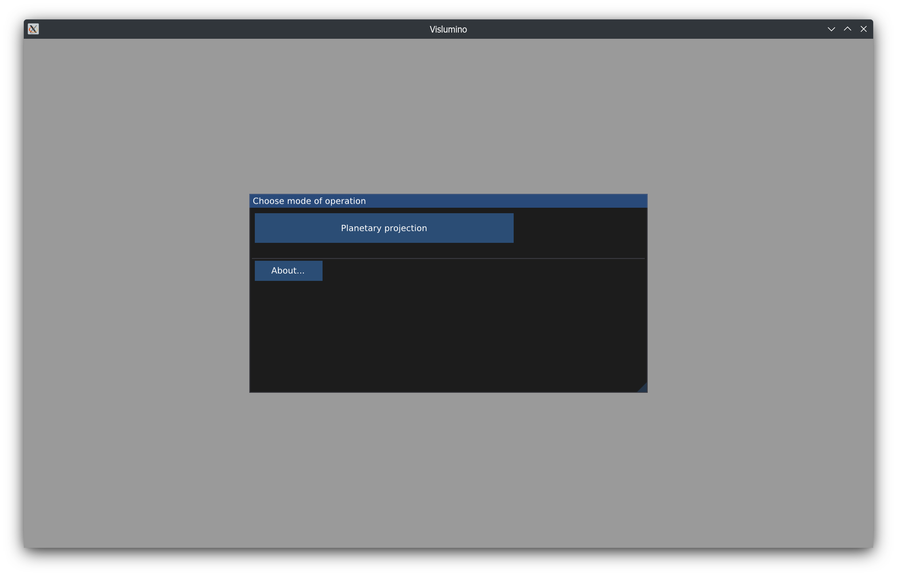

Niniejszy dokument udostępniony jest na licencji Creative Commons Attribution 4.0 International License.

W tym trybie Vislumino generuje odwzorowanie walcowe (równoodległościowe lub równopowierzchniowe Lamberta) i ortograficzne powierzchni planety w oparciu o astrofotografie — zwłaszcza sekwencje czasowe rotacji.
Po wybraniu trybu Planetary projection, obrazy źródłowe (zwykle: obrobione stacki) ładuje się poprzez opcję menu File/Load images....

Wszystkie obrazy muszą być tej samej wielkości i tego samego formatu pikseli. Tarcza planety musi mieć stały rozmiar i orientację oraz znajdować się w tym samym miejscu. Dla prawidłowego działania funkcji kompensacji rotacji planety (zob. niżej) odstępy czasowe między zdjęciami muszą być równe.
W oknie Source images można przejrzeć załadowane obrazy i ustawić ich parametry:
Obecnie nachylenie osi planety (inclination) i orientacja tarczy (roll) muszą być ustawione ręcznie. Łatwo to zrobić, obserwując widok odwzorowania walcowego, gdzie można wyświetlić siatkę odniesienia (uwaga: nie jest to siatka kartograficzna):
W widoku odwzorowania można włączyć kompensację rotacji planety (rotation comp.), np. by utrzymać szczegóły powierzchni w bezruchu między klatkami:

Funkcja auto oblicza kompensacją na podstawie średnicy tarczy, odstępu czasowego klatek i okresu obrotu podanych w oknie Source images:
Dzięki kompensacji łatwiej jest zauważyć potencjalny ruch względny pasów chmur (jak w powyższym wideo).
Manipulując suwakiem kompensacji, użytkownik może wybrać obiekt do unieruchomienia, np. przechodzący przed tarczą Jowisza księżyc galileuszowy:
Przycisk Export... w widoku odzworowania służy do zapisu wygenerowanych obrazów w wybranym katalogu wyjściowym. Można z nich następnie złożyć animację (zewnętrznym narzędziem), np.:
Automatyczne wykrywanie tarczy jest w niektórych przypadkach zawodne. Można to skorygować w oknie Source images. Przykładowo, w poniższym wideo obszary podbiegunowe wykazują w widoku odzworowania niewielką dystorsję, na którą pomaga ręczne zmniejszenie średnicy tarczy (pole disk/diameter):
Okno Globe view pokazuje planetę w odwzorowaniu ortograficznym. Orientację można zmienić przeciągając myszą z wciśniętym lewym przyciskiem; rolka myszy zmienia powiększenie.
Możliwe jest otwarcie wielu widoków odwzorowania równocześnie. Okna można zadokować do siebie wzajemnie, jak i do głównego okna programu: